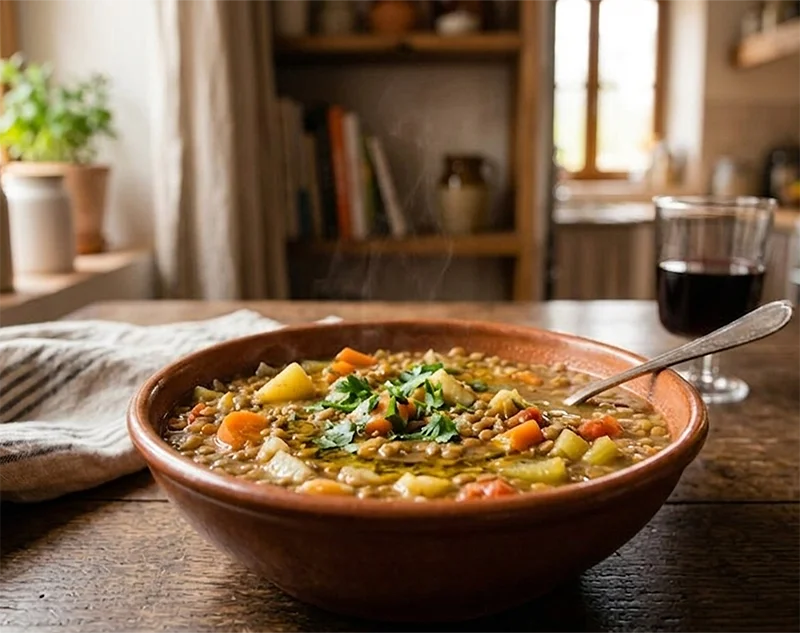

Receta saludable
Lentejas con verduras
Plato sencillo, nutritivo y económico, ideal para preparar varias raciones.
Ingredientes
- 250 g de lentejas pardinas
- 1 cebolla mediana
- 2 zanahorias
- 1 pimiento verde
- 2 dientes de ajo
- 1 tomate triturado pequeño
- 1 hoja de laurel
- 2 cucharadas de aceite de oliva
Preparación
- Pica y sofríe las verduras con el aceite de oliva.
- Añade el tomate triturado y cocina unos minutos.
- Incorpora las lentejas y la hoja de laurel.
- Cubre con agua y cocina hasta que las lentejas estén tiernas.
- Ajusta de sal y deja reposar antes de servir.
Consejo práctico
Guarda raciones en la nevera para tener comida lista durante 2 o 3 días.